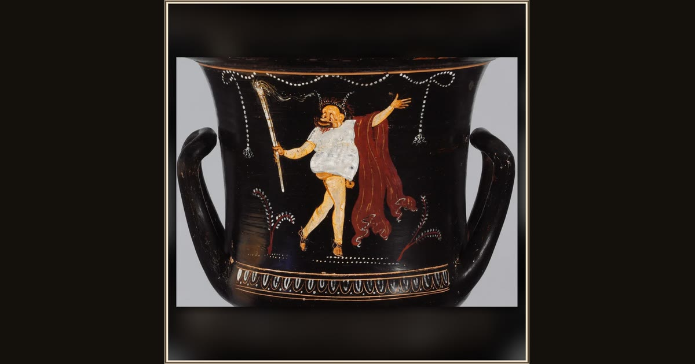

Terracotta calyx-krater (mixing bowl)
Konnakis Group; Greek, South Italian, Apulian, Gnathian · ca. 350–325 BCE · met
A masked, padded figure lifts a staff on this Apulian mixing bowl; Aristotle describes drama as people acting out a story and recounts the Dorian claim to comedy (3) Explore its place in Aristotle's Poetics, Poetics, section 3.